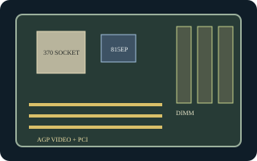

[ INDIVIDUAL COMPONENT // MOTHERBOARDS ]
Intel Desktop Board D815EPEA2
Intel Socket 370 ATX board for Pentium III/Celeron, using the Intel 815EP chipset. This is the EPEA2 model, distinct from the graphics-enabled D815EEA2.

Exact identity and revision: Intel Desktop Board D815EPEA2; family Product Guide A52560-002. Standard BIOS family EA81520A.86A. The physical PCB revision and AA number must be read from the board; do not use EEA2 firmware.
Specifications
| CPU / socket / chipset | Socket 370 Intel Pentium III and Celeron models qualified for the board and BIOS; Intel 815EP with ICH2. No integrated graphics. |
|---|---|
| Form factor / case | ATX, approximately 11.55 x 8.2 in.; ATX case with correct standoffs and I/O shield. |
| Memory | Three 168-pin SDRAM DIMM sockets, PC100/PC133, up to 512 MB supported. |
| Expansion | One AGP slot and five PCI slots; a separate AGP graphics card is required for video output. |
| Storage | Two IDE channels supporting ATA/100 and one floppy connector. |
| Rear I/O | PS/2 keyboard/mouse, serial, parallel, USB 1.1, and audio; no onboard VGA. LAN/audio option population varies with assembly. |
| BIOS / PSU | Intel BIOS family EA81520A.86A for the documented product set; verify board AA and BIOS ID. 20-pin ATX power input; confirm PSU pinout/rails and chassis grounding before operation. |
Compatibility and revision notes
The 815EP northbridge does not provide the integrated graphics of 815E-based D815EEA2. Plan on an AGP card and verify its signaling voltage/keying. The shared family guide contains separate layouts and setup notes: match the printed model, AA number, and BIOS identifier before installing a CPU or flashing firmware.
Sources & further reading
- Intel Desktop Boards D815EEA2/D815EPEA2/D815EFV/D815EPFV Product Guide A52560-002 (archived scan)Intel-authored guide with distinct EP and E model layouts and configuration instructions.
- Intel D815EEA2/D815EPEA2 Technical Product Specification (archived copy)Technical document covering the board family; use the D815EPEA2 sections for this model.